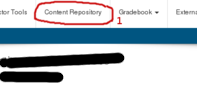
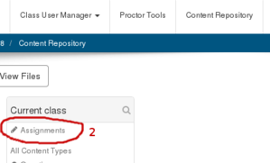
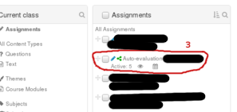
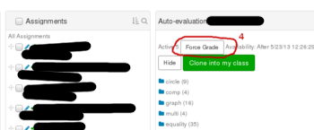
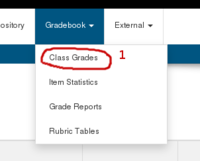
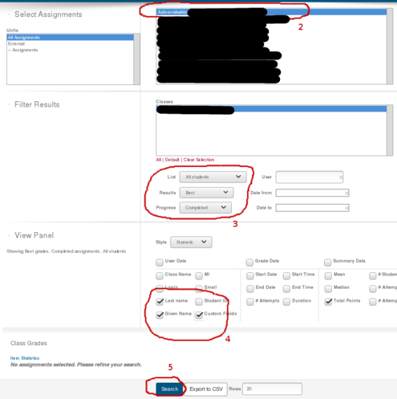
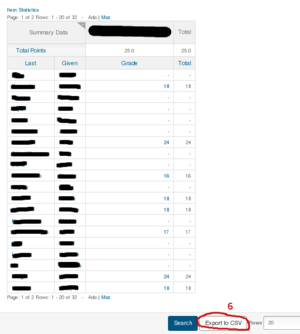

There is something that you must do before exporting grades to a CSV file.
If you have not checked Schedule Force Grading On in the section Scheduling and Visibility when creating your assignment, then you can force grading of all the assignments that the students have not submitted yet by following the simple instructions below.
Select content repository in the top menu (item 1 in the figure below).

Select Assignments (item 2 in the figure below) in the panel current Classes.

Select from the panel Assignments the assignment (item 3 in the figure below) that you want to force grade.

Click on the button Force Grade (item 4 in the figure below) at the top of the panel displaying the list of questions in the assignment that you have selected.

Now that all the assignments handed in by the students have been graded, you can follow the instruction below to get the student grades for the assignments and to download them to a CSV file.
Select Class Grades (item 1 in the figure below) under the drop down menu Gradebook at the top of the window.

You get the following form.

Select the assignments whose grades you want to export (item 2 in the figure above). In the section Filter Results (item 3 of the figure above), you can request for each student to get only the best version of the assignments that they have written, or to get only the last version, or ... You may also request additional information about each student: student name, student ID, date the student started to work on the assignment, ... (item 4 in the figure above). Finally, click on Search at the bottom of the form (item 5 of the figure above) to get a list like the following.

Click on Export to CSV (item 6 in the figure above) to download the list into a CSV file.